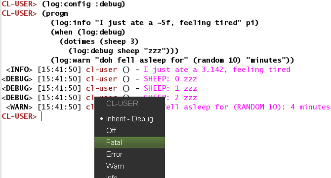

Вы вошли в этот новый мир Лиспа и теперь задаетесь вопросом: как мы можем отладить то, что происходит? Насколько он более интерактивен, чем на других платформах? Что приносит интерактивный отладчик из трассировки стека?
примечание: это руководство доступно в Поваренной книге Common Lisp и будет получать обновления там.
Если вам нужны пошаговые примеры интерактивной отладки с красивыми снимками экрана и гифками, см. Сообщения блога в разделе «Ссылки» ниже.
Оглавление
Конечно, мы можем использовать знаменитую технику «отладки печатью». Давайте просто вспомним несколько функций печати.
print работает, он печатает READable
представление своего аргумента, что означает, что то,
что напечатано(printed), может быть прочитано
(read) обратно, считывателем Lisp.
princ фокусируется на эстетическом
представлении.
format t "~a" …), с эстетической
директивой печатает строку (в t, стандартный поток вывода)
и возвращает nil, тогда как format nil … ничего не печатает
и возвращает строку. С помощью множества элементов управления форматом мы можем
распечатать сразу несколько переменных.
Логгирование(Ведение журнала) - хорошая эволюция от отладки печатью ;)
log4cl это популярная де-факто библиотека для ведения журналов, но не единственная. Загрузить:
(ql:quickload :log4cl)и у нас есть фиктивная переменная:
(defvar *foo* '(:a :b :c))
Мы можем использовать log4cl с его nickname(псевдонимом) log,
тогда его так же просто использовать, как:
(log:info *foo*);; <INFO> [13:36:49] cl-user () - *FOO*: (:A :B :C)
Мы можем чередовать строки и выражения со строками управления
format(форматом) или без них:
(log:info "foo is " *foo*);; <INFO> [13:37:22] cl-user () - foo is *FOO*: (:A :B :C)(log:info "foo is ~{~a~}" *foo*);; <INFO> [13:39:05] cl-user () - foo is ABC
С помощью сопутствующей библиотеки log4slime мы можем
интерактивно изменять уровень логгирования(записи журнала):
глобальный,
на пакет,
на функцию,
а также методами CLOS и иерархией CLOS (методы до и после).
Когда у нас много выходных данных, очень удобно отключать ведение журнала функций или пакетов, которые, как мы предполагаем, работают, и, таким образом, сужать наш поиск до нужной области. Мы даже можем сохранить эту конфигурацию и повторно использовать ее в другом образе, или даже на другой машине.
Все это можно сделать с помощью команд, сочетаний клавиш, а также с помощью меню или щелчков мышью.

Приглашаем вас прочитать файл readme для log4cl.
Частью удовольствия использования Lisp является превосходный REPL. Его существование обычно откладывает необходимость использования других инструментов отладки, если совсем не отменяет их для обычной процедуры.
Как только мы определим функцию, мы можем попробовать ее в REPL.
В Slime скомпилируйте функцию с помощью C-c C-c
(или весь буфер с C-c C-k), переключитесь в REPL
с помощью C-c C-z и попробуйте.
В конце концов войдите в пакет, над которым вы работаете
(in-package :your-package).
Обратная связь мгновенная. Нет необходимости ни перекомпилировать все, ни перезапускать какой-либо процесс, ни создавать основную функцию и определять аргументы командной строки для использования в оболочке (мы можем сделать это позже, когда потребуется).
Обычно нам нужно создать некоторые данные для тестирования наших функций.
Это последующее искусство существования REPL и, возможно, новая дисциплина для новичков.
Уловка состоит в том, чтобы записать тестовые данные вместе с вашими функциями,
но внутри объявления #+nil, чтобы только вы могли
вручную скомпилировать их:
#+nil(progn(defvar *test-data* nil)(setf *test-data* (make-instance 'foo â¦)))
Когда вы загружаете этот файл, *test-data*
не будет существовать, но вы можете создать его вручную с помощью
C-c C-c.
Мы можем определить функции тестирования здесь.
Некоторые делают то же самое внутри #| … |# Комментариев.
При этом не забывайте писать модульные тесты, когда придет время ;)
Эти две команды преследуют одну и ту же цель: распечатать описание(description)
объекта, а inspect - интерактивный.
(inspect *foo*)The object is a proper list of length 3.0. 0: :A1. 1: :B2. 2: :C> q
Мы также можем в редакторах, которые его поддерживают, щелкнуть правой кнопкой мыши
любой объект в REPL и проверить(проинспектировать/inspect) его.
Нам представлен экран, на котором мы можем глубоко погрузиться в структуру данных и
даже изменить ее.
Давайте быстро рассмотрим более интересную структуру, объект:
(defclass foo ()((a :accessor foo-a :initform '(:a :b :c))(b :accessor foo-b :initform :b)));; #<STANDARD-CLASS FOO>(make-instance 'foo);; #<FOO {100F2B6183}>
Щелкаем правой кнопкой мыши по объекту #<FOO и
выбираем «inspect/проверить». Нам представлена интерактивная панель (в Slime):
#<FOO {100F2B6183}>--------------------Class: #<STANDARD-CLASS FOO>--------------------Group slots by inheritance [ ]Sort slots alphabetically [X]All Slots:[ ] A = (:A :B :C)[ ] B = :B[set value] [make unbound]
Когда мы щелкаем или нажимаем Enter на строке слота A, мы исследуем его дальше:
#<CONS {100F5E2A07}>--------------------A proper list:0: :A1: :B2: :C
Всякий раз, когда возникает исключительная ситуация (см. Обработку ошибок(error handling)), появляется интерактивный отладчик.
Он представляет сообщение об ошибке, доступные действия (перезапуски) и обратную трассировку. Несколько замечаний:
перезапуски программируются, и мы можем создавать собственные,
в Slime нажмите v
на трассировке стека, чтобы перейти к исходному файлу в правой строке,
нажмите Enter на фрейме, чтобы получить более подробную информацию,
мы можем изучить функциональность с помощью меню, которое должно появиться в нашем редакторе. См. Ниже в разделе «break» еще несколько команд (eval во фрейме и т. Д.).
Обычно ваш компилятор оптимизирует работу, и это сокращает объем информации,
доступной отладчику. Например, иногда мы не видим промежуточных переменных вычислений.
Возможно, вы захотите напечатать аргумент функции (с e
для «eval в фрейме», см. Ниже), но вы продолжаете получать ошибку
Variable XYZ is unbound.
Чтобы исправить это, мы должны изменить варианты оптимизации с помощью
declaim в начале файла:
(declaim (optimize (speed 0) (space 0) (debug 3)))
или с declare, внутри defun:
(defun my-fun (xyz)(declare (optimize (debug 3)))â¦)
и перекомпилировать код. Теперь вы должны увидеть локальные переменные, такие как
xyz.
trace позволяет нам видеть, когда была вызвана функция, какие аргументы она получила и какое значение вернула.
(defun factorial (n)(if (plusp n)(* n (factorial (1- n)))1))(trace factorial)(factorial 2)0: (FACTORIAL 3)1: (FACTORIAL 2)2: (FACTORIAL 1)3: (FACTORIAL 0)3: FACTORIAL returned 12: FACTORIAL returned 11: FACTORIAL returned 20: FACTORIAL returned 66(untrace factorial)
Чтобы отменить трассировку всех функций, просто вычислите
(untrace).
В Slime у нас также есть ярлык C-c M-t для трассировки
или отмены трассировки функции.
Если вы не видите рекурсивных вызовов, это может быть связано с оптимизацией компилятора. Попробуйте это перед определением отслеживаемой/трассируемой функции:
(declaim (optimize (debug 3)))
Вывод печатается в *trace-output*
(см. CLHS).
В Slime у нас также есть интерактивный диалог трассировки с code class="western">M-x
slime-trace-dialog, привязанным к C-c T.
В SBCL мы можем использовать (trace foo :methods t)
для отслеживания порядка выполнения комбинации методов (методов до, после, вокруг).
Например:
(trace foo :methods t)(foo 2.0d0)0: (FOO 2.0d0)1: ((SB-PCL::COMBINED-METHOD FOO) 2.0d0)2: ((METHOD FOO (FLOAT)) 2.0d0)3: ((METHOD FOO (T)) 2.0d0)3: (METHOD FOO (T)) returned 32: (METHOD FOO (FLOAT)) returned 92: ((METHOD FOO :AFTER (DOUBLE-FLOAT)) 2.0d0)2: (METHOD FOO :AFTER (DOUBLE-FLOAT)) returned DOUBLE1: (SB-PCL::COMBINED-METHOD FOO) returned 90: FOO returned 99
См. Раздел CLOS для получения более подробной информации.
step это интерактивная команда
с той же областью действия, что и trace.
Этот:
(step (factorial 2))дает интерактивную панель с доступными перезагрузками:
Evaluating call:(FACTORIAL 2)с аргументами:2[Condition of type SB-EXT:STEP-FORM-CONDITION]Restarts:0: [STEP-CONTINUE] Resume normal execution1: [STEP-OUT] Resume stepping after returning from this function2: [STEP-NEXT] Step over call3: [STEP-INTO] Step into call4: [RETRY] Retry SLIME REPL evaluation request.5: [*ABORT] Return to SLIME's top level.--more--Backtrace:0: ((LAMBDA ()))1: (SB-INT:SIMPLE-EVAL-IN-LEXENV (LET ((SB-IMPL::*STEP-OUT* :MAYBE)) (UNWIND-PROTECT (SB-IMPL::WITH-STEPPING-ENABLED #))) #S(SB-KERNEL:LEXENV :FUNS NIL :VARS NIL :BLOCKS NIL :TAGS NIL :TYPE-RESTRICTIONS ..2: (SB-INT:SIMPLE-EVAL-IN-LEXENV (STEP (FACTORIAL 2)) #<NULL-LEXENV>)3: (EVAL (STEP (FACTORIAL 2)))
Пошаговый режим полезен, но может быть признаком того, что вам нужно упростить свою функцию.
Вызов break заставляет программу войти в отладчик, из которого мы можем проверить стек вызовов
Посмотрите на меню SLDB, оно показывает клавиши
навигации и доступные действия. Из которых:
e
(sldb-eval-in-frame) запрашивает выражение и вычисляет его
в выбранном кадре. Вот как мы можем исследовать наши промежуточные переменные.
d аналогичен с добавлением
красивой печати результата.
Как только мы находимся в кадре и обнаруживаем подозрительное поведение, мы можем даже повторно скомпилировать функцию во время выполнения и возобновить выполнение программы с того места, где оно было остановлено (с помощью перезапуска «step-continue/пошаговое продолжение»).
advise и watch доступны в реализациях некоторых поставщиков, таких как LispWorks.
Они недоступны в SBCL. advise позволяет изменять функцию
без изменения ее исходного кода или делать что-то до или после ее выполнения, например,
комбинацию методов CLOS (до, после методов).
watch позволяет указать переменные,
которые будут отображаться в каком-либо графическом интерфейсе во время
выполнения программы.
И последнее, но не менее важное: возможно, вы ищете автоматическое тестирование отдельных функций! См. Раздел тестирования/testing и список test frameworks(фреймворков для тестирования) и библиотек.
âHow to understand and use Common Lispâ, chap. 30, David Lamkins (book download from authorâs site)
Вы можете запустить свое программное обеспечение на машине в сети, подключиться к нему и отлаживать его из дома, из вашей среды разработки.
При этом необходимо запустить сервер Swank на удаленном компьютере (Swank является внутренним(backend) партнером Slime), создать туннель ssh и подключиться к серверу Swank из нашего редактора. Затем мы можем прозрачно просматривать и вычислять код в запущенном экземпляре.
Чтобы проверить это, давайте определим функцию, которая печатает вечно.
При необходимости сначала импортируйте зависимости:
(ql:quickload '("swank" "bordeaux-threads"));; a little common lisp swank demo;; while this program is running, you can connect to it from another terminal or machine;; and change the definition of doprint to print something else out!(require :swank)(require :bordeaux-threads)(defparameter *counter* 0)(defun dostuff ()(format t "hello world ~a!~%" *counter*))(defun runner ()(swank:create-server :port 4006)(format t "we are past go!~%")(bt:make-thread (lambda ()(loop repeat 5 do(sleep 5)(dostuff)(incf *counter*))):name "do-stuff"))(runner)
На сервере мы можем запустить этот код с помощью
sbcl --load demo.lisp
Если вы проверите с помощью (bt:all-threads),
вы увидите, что ваш сервер Swank работает на порту 4006, а также другой поток,
готовый делать что-то:
(#<SB-THREAD:THREAD "do-stuff" RUNNING {10027CEDC3}>#<SB-THREAD:THREAD "Swank Sentinel" waiting on:#<WAITQUEUE {10027D0003}>{10027CE8B3}>#<SB-THREAD:THREAD "Swank 4006" RUNNING {10027CEB63}>#<SB-THREAD:THREAD "main thread" RUNNING {1007C40393}>)
Мы делаем переадресацию портов на нашей машине разработки:
ssh -L4006:127.0.0.1:4006 username@example.comэто безопасно перенаправит порт 4006 на сервере example.com на порт 4006 нашего локального компьютера (Swank принимает соединения только от localhost).
Подключаемся к работающему Swank с помощью
M-x slime-connect, выбирая localhost
для хоста и порт 4006.
Мы можем написать новый код:
(defun dostuff ()(format t "goodbye world ~a!~%" *counter*))(setf *counter* 0)
и вычислить его как обычно, например, с помощью C-c C-c или
M-x slime-eval-region.
Результат должен измениться.
Вот как Рон Гаррет отлаживал космический корабль Deep Space 1 с Земли в 1999 году:
Мы смогли отладить и исправить состояние гонки, которое не обнаружилось во время наземного тестирования. (Отладка программы, работающей на аппаратном обеспечении стоимостью 100 миллионов долларов, которое находится на расстоянии 100 миллионов миль, представляет собой интересный опыт. Выполнение цикла чтения-оценки-печати( )на космическом корабле оказалось бесценным для поиска и устранения проблемы.